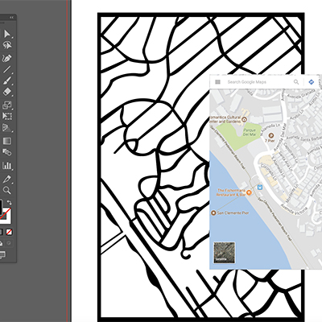
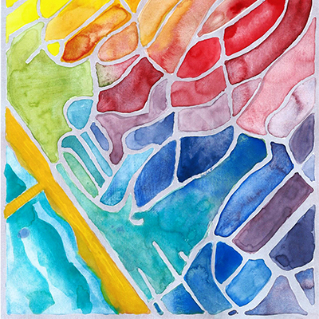

Stages



Vectorizing map, painting map, putting it together in Adobe InDesign
Layers
Timelapse video of postcard layers
Manufactured Postcards
Inspired by the complex twisting streets in San Clemente, California, I designed a series of postcards to celebrate this beach town and its confusing city grid. I used tools such as Adobe Illustrator, Adobe Photoshop, Adobe InDesign and a watercolor paint set to create the design. I prepared the resulting files for output and arranged for the cards to be digitally printed on glossy finish, 100-lb card stock. After receiving the cards, I canvassed nearby businesses with samples and eventually partnered with a local boutique as their postcard and notecard supplier.
Stages
Vectorizing map, painting map, putting it together in Adobe InDesign
Layers
Timelapse video of postcard layers